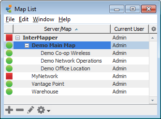

The Map List Window
Use the Map List window as the primary interface to InterMapper.
- With InterMapper, you can control all aspects of the InterMapper
server running on your local machine. You can also disable a map by right-clicking it and choosing Disable Map.
-
With InterMapper RemoteAccess, you can access multiple
InterMapper Servers from the same machine. If you have administrator
access, you can edit all server settings on a remote server. You can also disable a map by right-clicking it and choosing Disable Map.
The menu items available in the File menu differ slightly between InterMapper
and InterMapper RemoteAccess. For more information, see the File
Menu reference.
The Map List Window
Use the Map List window to view a list of maps. If you have InterMapper RemoteAccess,
you can also view a list of other available InterMapper servers, to log into
one or more servers, and to view a list of maps currently running on each
server.

The Map List Window
Using the Map List Window
Here are a few tips for getting the most out of the Map List window:
- A green map name indicates that the map's window is open.
- Position the mouse cursor over a map in the list to view its DNS Name and/or IP address, and the port on which it's listening for InterMapper RemoteAccess connections.
-
a map to choose commands from the context menu.
- Use the Quick Menus, described below, to perform map-related commands and operations.
Quick Menus
Use the quick menus at the bottom of the map list window to access frequently used functions.

- Click the Add menu to add a map or server.
- Select a map and click the Delete (-) button to remove the map from the Map Window.
Note: that this does not actually delete the map; it simply disables it.
- Select a server, then click the Info button to view or change info about a server.

- Use the Tools menu to perform a number of map-related operations. You can enable and disable maps, backup, restore, or duplicate a map. You can also import or export maps and data files, as well as open the Server Settings window...
Arranging your Maps into Folders
You can arrange your maps into folders as shown above, using the Server Configuration>Enabled Maps pane of the Server Settings window. For more information, see Enabled Maps.
Viewing the Global Device List
From the Map List window, you can view a list of all devices on a particular server.
To view a global device list:
- With a server selected in the map list, choose Device List from the Map List window's Window menu. A list of all devices on the selected server appears.